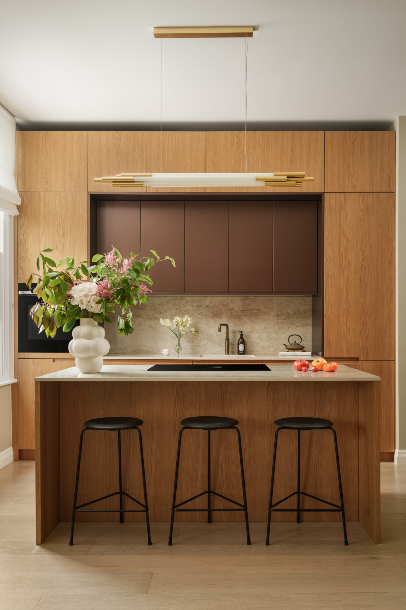

London · Bespoke kitchen
Elm Park
Road.
Project 01 / Warm structure
Material warmth.
Quiet order.
A calm kitchen study where warm oak, pale stone and measured proportions make everyday rituals feel considered.
A Nura principle